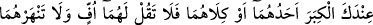
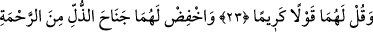
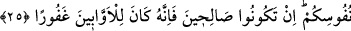
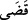
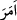

ANA BABAYA
ÖF BİLE DEME !
23. Rabbin, sadece kendisine kulluk etmenizi, ana-babanıza da iyi davranmanızı
kesin bir şekilde emretti. Onlardan biri veya her ikisi senin yanında yaşlanırsa,
kendilerine “öf!” bile deme; onları azarlama; ikisine de güzel söz söyle.
24. Onları esirgeyerek alçak gönüllülükle üzerlerine kanat ger ve: “Rabbim!
Küçüklüğümde onlar beni nasıl yetiştirmişlerse, şimdi de sen onlara (öyle) rahmet
et!” diyerek duâ et.
25. Rabbiniz sizin kalplerinizdekini çok iyi bilir. Eğer siz iyi olursanız, şunu bilin
ki Allah, kötülükten yüz çevirerek tevbeye yönelenleri son derece bağışlayıcıdır.
“Rabbin,” her mükellefe “sadece kendisine kulluk etmenizi, ana-babanıza da iyi
davranmanızı kesin bir şekilde emretti.” “
” kelimesi “
emretti” mânâsını da
içine alır. Burada içine alınan asıl, içine alan ise onun şartı/kaydı kılınmıştır. Çünkü
hakkında hüküm verilen şeyin gerçekleşmesi gerekir. Halbuki muhataplardan bir kısmı
henüz tevhîd ehli olmamıştır.
et-Te’vîlâtün-Necmiyye’de şöyle denilir: “Allah Teâlâ “Rabbin” buyurarak
Rasûlullah (s.a.)’i kasdetmiştir. Çünkü terbiye asâleten O’na mahsustur, bu konuda
ümmet O’na tâbidir. “Rabbin emretti” ifâdesi ise ezelde hükmetti ve takdîr etti,
demektir.
“Rabbin, sadece kendisine kulluk etmenizi emretti,” Çünkü ibadet saygının ve
yüceltmenin zirvesidir. Yalnızca son derece azamet ve son derece ihsan sâhibi olan
Allah ibâdete müstehaktır. “Ana-babaya iyilik etmenizi emretti,” Çünkü varlık âlemine
gelmek ve yaşamak için zâhirî sebep onlardır. Allah Teâlâ ise gerçek sebeptir. Allah
öncelikle gerçek sebebe tâzimde bulunmayı, sonra da zâhirî sebep olan ana-babaya
saygının gerekliliğini haber verdi. Yâni Allah ana-babaya iyilikte bulunmayı kendisini
bir tanımak ile birlikte zikretmiştir. Çünkü onların senin var olmana sebep olmalarında,
âciz ve küçükken seni terbiye etmelerinde ulûhiyyet ve rubûbiyyet makamı ile